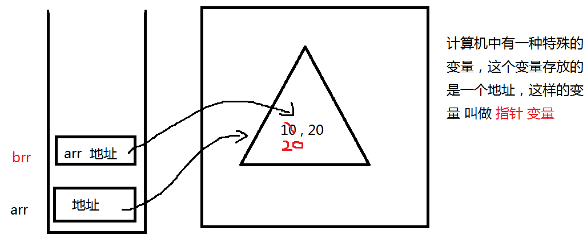

1、梳理知识点
1、运算符和表达式
算术 % ++ --
关系 == === >= != !== <= ...
逻辑 && || !
条件 ? : 判断
赋值 = += -=
2、类型转换
"888" 自动转数值
强制 parseInt() parseFloat() Number("333wsws") Boolean() toString()
3、短路 true|| false &&
4、三大结构 顺序 选择 循环
5、选择结构控制语句
if(){ }else{ }
if()else if(){}...else{}
switch( ){ }
6、循环
for while dowhile for..in
7、函数
函数定义 function
函数参数 形参 实参
实参副本 arguments
变量的作用域
全局变量
局部变量
函数递归调用 : 自己调用自己
函数和事件关系
事件应用
事件三要素 ： 事件源.事件 = 事件处理程序
2、对象
对象定义 ： 对象是一个整体 用来描述一个事物的多个信息 可以将这样多个信息的组合就称为一个对象
var obj = {
键 : 值 ,
键 : 值 ,
...
}
值可以是任意类型
所有的对象的都具有 属性 和 方法
如何调用属性和方法 ：对象.属性 对象.方法 方法一定有括号
如果定义对象时，键对应的值是一个函数，这个键 就是 方法的名称
3、构造函数
使用new 关键字 创建对象的函数 就是构造函数
var num = new Number();
4、内置对象(构造函数)
Array String Date Math RegExp
5、Array对象 数组
23,76,89,56,90 将这些没有规律的数 存放到一个容器中 操作容器 ，这样的容器就称为 数组 数组也是对象
数组定义 ：
var arr = [23,56,78,90];
var arr = new Array(45,679,8);
var arr = new Array(8); 如果括号中只有一个数值类型的数据，该数值表示 数组的长度 （长度是整数）
数组长度属性 ：length
数组中值的操作（存 取） ： 数组名[下标] 下标从0开始 最大下标 ：数组length-1
数组的长度不固定
数组定以后 没有给值，下标对应的值默认就是undefined
6、数组遍历（遍历---循环）
for 或 for ... in
for .. in 遍历语法格式 ：
for( var 变量 in 对象 ){
}
for...in 特点 ：
没有循环条件
自动取出下标 从0开始 到arr.length-1 自动结束
下标类型 string
for...in 只能遍历对象
7、二维数组 （了解）
由行和列组成
定义一个数组 ：
arr = [ [1,2],[3,5],[45,34],[6,7] ]
操作二维数组存和取 ： arr[行下标][列下标]
8、数组的操作方法
尾部操作:
push() 向数组尾部添加一个或多个数
pop() 删除数组尾部一个元素 没有参数
头部操作 :
unshift() 向数组头部添加一个或多个数
shift() 删除数组头部元素 没有参数
splice()
splice( start ) 表示删除从start位置开始的数据 一致删除到数组结尾
splice( start , length )
splice( start,length , num1,num2 ) 第三个参数个数不固定
当length值为1 表示替换
当length值为0 表示添加
数组排序方法 ： sort() 改变原数组 默认是升序排序 默认是按 字符 排序
如果按数值排序 ：
arr.sort( function( x,y ){
return x-y>0; 升序排序 return x-y < 0 降序排序
} )
上面6个方法都会改变原数组
下面这些方法 不会改变原数组 明白这些方法的返回值
concat() 数组的合并 arr.concat( brr )
join() 将数组转成 字符串
reverse() 翻转数组 （改变原数组）
9、栈 和 堆
栈 ：
特点 ： 有底无顶 先进后出
定义一个变量时，会在内存中开辟一块存储空间，这个空间用来存放某些变量的值 这个空间就叫做 栈 这个栈空间 一般存 基本类型数据 （一个值）
堆 ：
堆中 存放的是 引用类型变量的值 （可以存储多个值）
堆中的值对应的变量 一改全改

函数参数传递方式 ：
值传递 ：单向传递
地址传递 ： 双向传递 （一改全改）